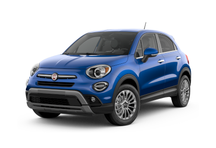

FIAT | |
 |
Fiat, es una histórica marca italiana de automóviles, bajo la que se comercializan vehículos desde 1899, origen del mayor grupo industrial italiano, Fiat S.p.A., propiedad de Stellantis. |
FIAT 500 |
|
El Fiat 500 es el pequeño vehículo urbano fabricado por Fiat. El Fiat 500 moderno rememora el auténtico 500, un clásico que pobló las calles de numerosos países entre los años 1957 y 1975. |
|
CARACTERISTICAS |
|
Potencia |
245 |
peso |
1650 |
precio |
51800,00 |
consumo |
6.5 |
cilindrada |
2.0 |
FIAT PANDA |
|
El FIAT Panda es un urbano, del segmento A, fabricado por FIAT desde 1980. Actualmente se comercializa la tercera generación, presentada en 2012. |
|
CARACTERISTICAS |
|
Potencia |
340 |
peso |
1600 |
precio |
82000,00 |
consumo |
6.7 |
cilindrada |
3.0 |
FIAT TIPO |
|
El Fiat Tipo es un automóvil de tamaño medio, del segmento C, fabricado por Fiat desde 1988. Actualmente se comercializa la segunda generación presentada en 2016 y que ha sido actualizado en 2020 con su primer restyling. |
|
CARACTERISTICAS |
|
Potencia |
395 |
peso |
1840 |
precio |
103000,00 |
consumo |
8.2 |
cilindrada |
4.4 |
FIAT 500X |
|
El Fiat 500X es un SUV de segmento B ideado para afrontar rutas urbanas y trayectos por autopista que se fabrica por Fiat desde el año 2014. En la actualidad se sigue comercializando la primera generación del Fiat 500X, un coche que deriva del Fiat 500 convencional y que busca acentuar su versatilidad con una carrocería todocamino pero sin altertar su esencia. |
 | CARACTERISTICAS |
Potencia |
550 |
peso |
1820 |
precio |
120000 |
consumo |
10.6 |
cilindrada |
4.4 |